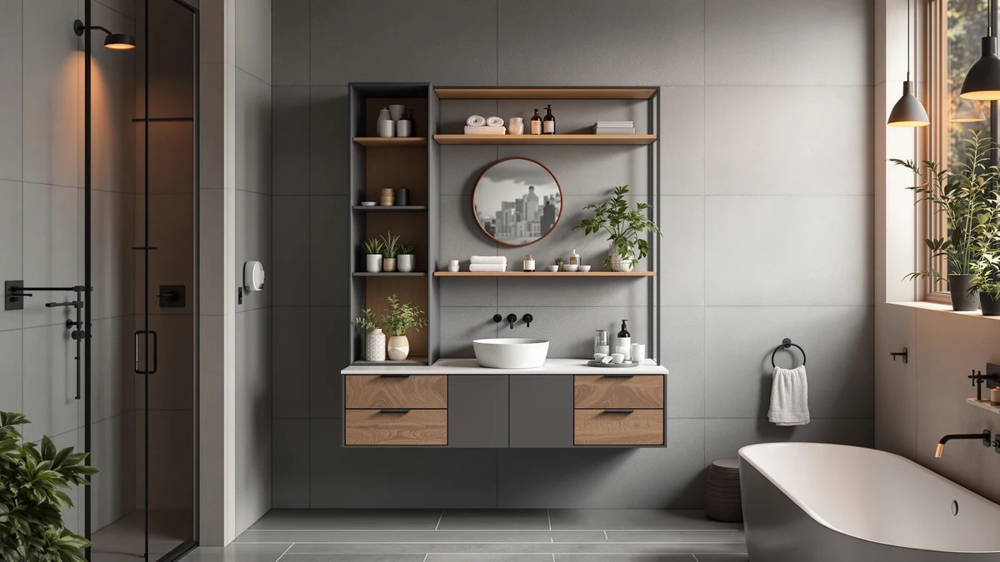

Biboraya Expandable Under Sink Organizers Review (2026): Worth It?
Prices and picks verified as of November 2026. Independent, reader-supported reviews.


Quick Answer
This Biboraya Expandable Under Sink Organizers Review compares Biboraya's adjustable under-sink organizer against two GeeBom pull-out organizers and a freestanding Akxomel cabinet. For cabinets that don't match a fixed tray width, the 1 Pack Expandable Under Sink is the strongest fit here, because its basket extends from 15.3 to 24.2 inches instead of arriving at one set size.
Our pick: 1 Pack Expandable Under Sink — $47.49 Check Price on Amazon
Bottom line: our top pick is the 1 Pack Expandable Under Sink Organizers And Storage With at $47.49.
Things to Know Before You Buy
- This Biboraya Expandable Under Sink Organizers Review compares an adjustable organizer against two fixed-size alternatives, so your cabinet's exact width matters more here than usual.
- The Biboraya 1 Pack Expandable Under Sink extends from 15.3 to 24.2 inches wide. Measure your cabinet's narrowest point before you order.
- The two GeeBom Under Sink Organizer Pull listings are priced two cents apart, $46.79 versus $46.77, and both sit below the Biboraya on price.
- The Akxomel Rattan Small Bathroom Cabinet isn't an under-sink insert at all. It's a freestanding cabinet, so it solves a different storage problem than the other three.
- If your budget caps out below $50, see our roundup of bathroom organizers under $50 for more adjustable options.
This Biboraya Expandable Under Sink Organizers Review compares the Biboraya 1 Pack Expandable Under Sink organizer against two GeeBom pull-out organizers and a freestanding Akxomel cabinet, because an expandable basket isn't a feature every under-sink organizer actually offers. Most cabinets have an irregular width once you account for a drain trap and water lines, and a fixed-size tray either wastes the extra space or doesn't fit the opening at all. We looked at how each of these four products handles that problem and what each one costs.
For most people shopping for an adjustable under-sink organizer, the Biboraya 1 Pack Expandable Under Sink is the strongest pick in this comparison. Its basket extends from 15.3 to 24.2 inches, covering a wider span of cabinet widths than either GeeBom's fixed-size pull-out or the Akxomel's freestanding cabinet, which isn't built to go inside a cabinet in the first place. Your own cabinet width and budget might still point you toward one of the three alternatives, so keep reading before you decide.
Why You Should Trust Us
We don't own or install every under-sink organizer covered in this Biboraya Expandable Under Sink Organizers Review. We research current pricing, listed dimensions and materials, and patterns in verified owner reviews, then compare the results side by side. Ilane Tall covers bathroom storage and small-space organization for Best Bathroom Storage, following the same research process used across the site: real listing data, real prices, and honest notes about what buyers report after they've used a product.
Our Research Experience
We did not install the Biboraya organizer, either GeeBom pull-out, or the Akxomel cabinet in a bathroom for this Biboraya Expandable Under Sink Organizers Review. Instead, we compare each listing's stated dimensions, materials and current price, then read through patterns in verified owner reviews for recurring complaints, such as a basket that won't lock at a given width or a frame that feels wobbly once loaded. We cross-check pricing against each seller's own listing so the numbers here reflect what you would actually pay. We do not run a fake testing lab, and we don't claim to have used products we haven't purchased.
Overview & Specs

1 Pack Expandable Under Sink
What we like
- The basket expands from 15.3 to 24.2 inches wide, so one unit fits a range of cabinet widths instead of a single fixed size
- The metal-and-wood frame holds up better than the thin plastic organizers typically sold for the same spot
- At $47.49, it's close enough to both GeeBom alternatives below that the adjustable width doesn't add much to the price
Flaws but not dealbreakers
- At $47.49, it costs about 70 cents more than either GeeBom listing in this comparison
- An adjustable basket takes a few extra minutes to set up than a fixed-width tray, since you dial in the width before it locks in place
| Material | Metal / wood |
| Size | 1 Pack-15.3"-24.2"W |
Biboraya built the 1 Pack Expandable Under Sink organizer around a single idea: most cabinets aren't a standard width, so a fixed-size tray either leaves gaps on one side or doesn't fit at all. The basket extends from 15.3 to 24.2 inches, covering a wider range of under-sink cabinets than a one-size tray, and the metal-and-wood frame gives it more structure than the typical plastic bin sold for the same spot.
At $47.49, the organizer costs slightly more than either GeeBom pull-out covered later in this Biboraya Expandable Under Sink Organizers Review, though the gap comes down to cents rather than dollars. What matters more is your cabinet's actual width. An organizer that doesn't expand to match it will either leave usable space empty or miss the opening altogether, so measure before you buy rather than guess.
What We Liked
Across all four products in this Biboraya Expandable Under Sink Organizers Review, the Biboraya's expandable basket answers an irregular cabinet width more directly than the alternatives. Its 15.3-to-24.2-inch range covers more cabinets than a single fixed size, and the metal-and-wood frame reads as sturdier than the typical plastic bin sold for the same spot. The two GeeBom listings skip that setup step entirely, since there's no width to dial in, and both land within two cents of each other on price.
What Could Be Better
None of the four listings in this Biboraya Expandable Under Sink Organizers Review publish an exact shelf weight limit, which makes it hard to plan for heavier items like a full bottle of mouthwash or a gallon-size cleaning jug. The Biboraya organizer, at $47.49, also costs the most of the three under-sink options here, though the gap to either GeeBom listing stays under a dollar. An adjustable basket needs a few minutes of setup to dial in the width, something the fixed-size GeeBom trays skip.
Who Is It For?
This Biboraya Expandable Under Sink Organizers Review points toward the Biboraya organizer if your cabinet width falls between 15.3 and 24.2 inches and doesn't match a standard fixed-size tray. It also suits anyone who'd rather buy one adjustable unit than guess at measurements and risk returning a tray that doesn't fit. If your cabinet is already a common width and you want the simplest setup, either GeeBom Under Sink Organizer Pull below gets you a similar two-tier layout for slightly less money.
Alternatives to Consider
We also researched three other storage options for this Biboraya Expandable Under Sink Organizers Review: two GeeBom Under Sink Organizer Pull listings priced within two cents of each other, and the Akxomel Rattan Small Bathroom Cabinet, a freestanding unit that doesn't go inside a cabinet at all. Each one trades the Biboraya's adjustability for a lower price or a different storage format entirely.
The GeeBom Under Sink Organizer Pull, priced at $46.79, is the simpler of the two alternatives built specifically for the same under-sink spot as the Biboraya pick. Where the Biboraya's basket expands to meet a range of cabinet widths, the GeeBom arrives as a single pull-out tray at a fixed size, which works fine if your cabinet already falls within a standard width range and you'd rather skip the extra setup step of dialing in an adjustable basket. At roughly 70 cents less than the Biboraya, the savings are too small to be the deciding factor on their own. It comes down to whether your cabinet needs that adjustability in the first place. If a fixed-size, two-tier pull-out already fits your space, this GeeBom listing gets you there for slightly less money and one less thing to adjust during setup.
The second GeeBom Under Sink Organizer Pull listing in this Biboraya Expandable Under Sink Organizers Review is nearly identical to the one above, down to the same product name, and priced at $46.77, two cents below its sibling listing. Treat the two as the same organizer sold under separate Amazon listings rather than two meaningfully different products. Compare both before you buy, since pricing on near-duplicate listings like these can shift independently, and the cheaper one on a given day is simply the better deal. Beyond the two-cent gap, the same trade-off applies here as with the other GeeBom listing: a fixed-size tray that's simpler to set up than the Biboraya's adjustable basket, at the cost of not expanding if your cabinet runs wider or narrower than its built-in size.
The Akxomel Rattan Small Bathroom Cabinet, at $45.99, solves a different problem than the other three products in this comparison. Rather than sliding into the cabinet space under a sink, it's a freestanding, rattan-paneled cabinet meant to stand on the floor, typically next to a toilet or vanity. That makes it a reasonable alternative if your under-sink cabinet is already full or too narrow for any of the three pull-out organizers above, and you'd rather add storage elsewhere in the bathroom instead. It isn't a direct substitute for the Biboraya or either GeeBom listing, since it doesn't address cabinet space at all, but it's worth considering if your real bottleneck is overall bathroom storage rather than what fits under the sink specifically.

Editor's Pick
GeeBom Under Sink Organizer Pull
A GeeBom Under Sink Organizer Pull priced about 70 cents below the Biboraya pick, worth a look if your cabinet's width doesn't need an expandable basket.
$46.79
Check Price on Amazon
Best Value
GeeBom Under Sink Organizer Pull
Nearly identical to the GeeBom listing above and two cents cheaper, a reminder to compare both listings before you check out.
$46.77
Check Price on Amazon
Premium Choice
Akxomel Rattan Small Bathroom Cabinet
Skips the cabinet entirely. The Akxomel Rattan cabinet is a freestanding storage tower for next to the toilet or vanity, not an under-sink insert.
$45.99
Check Price on AmazonIs the 1 Pack Expandable Under Sink organizer worth the extra cost over the GeeBom alternatives?
At $47.49, the Biboraya organizer costs about 70 cents more than either GeeBom Under Sink Organizer Pull listing in this Biboraya Expandable Under Sink Organizers Review.
What's the difference between the two GeeBom Under Sink Organizer Pull listings?
Both share the same product name and sit within two cents of each other, $46.79 and $46.77.
Frequently Asked Questions
Is the 1 Pack Expandable Under Sink organizer worth the extra cost over the GeeBom alternatives?
At $47.49, the Biboraya organizer costs about 70 cents more than either GeeBom Under Sink Organizer Pull listing in this Biboraya Expandable Under Sink Organizers Review. It earns that small premium if your cabinet's width doesn't match a fixed-size tray, since its basket adjusts from 15.3 to 24.2 inches instead of arriving at one set size.
What's the difference between the two GeeBom Under Sink Organizer Pull listings?
Both share the same product name and sit within two cents of each other, $46.79 and $46.77. Treat them as the same organizer sold under two separate Amazon listings rather than two distinct products, and buy whichever one is in stock or priced lower on the day you order.
Can the Akxomel Rattan Small Bathroom Cabinet go under a sink?
No. It's a freestanding cabinet built to stand on the floor next to a toilet or vanity rather than slide into the cabinet space under a sink. If you need an under-sink fit, the Biboraya organizer or either GeeBom pull-out above are the better match.
Final Verdict
This Biboraya Expandable Under Sink Organizers Review comes down to how closely your cabinet's width matches a standard size. The Biboraya 1 Pack Expandable Under Sink organizer is the pick for most people, because its basket adjusts from 15.3 to 24.2 inches, covering more cabinets than a fixed-width tray for about 70 cents more than the GeeBom alternatives. If your cabinet is already a common width, either GeeBom Under Sink Organizer Pull listing gets you a similar two-tier layout for slightly less, and if you need storage outside the cabinet entirely, the Akxomel Rattan cabinet solves a different problem altogether.